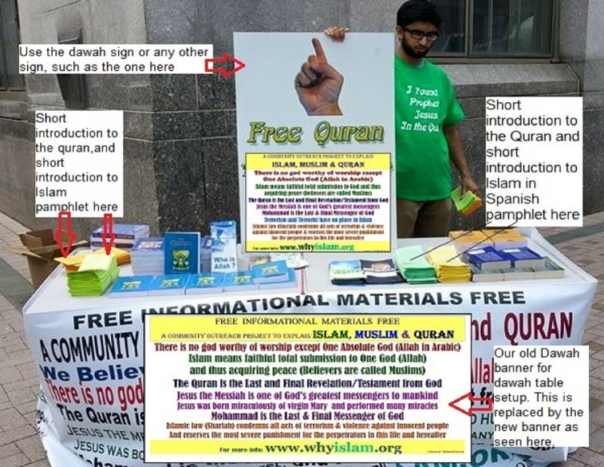
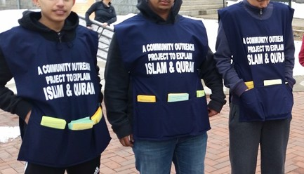
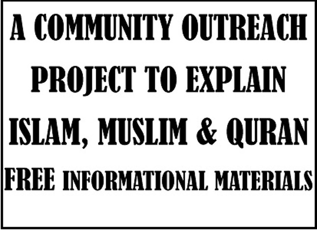

DAWAH BANNERS AND SIGNS
Dawah banners and signs are essential for a dawah table setup during a dawah event. They can also be displayed outside masjids, Islamic community centers, private properties, or other suitable locations where appropriate.
DAWAH BANNER
A dawah banner is usually displayed across the front of a dawah table during outreach events to attract the attention of pedestrians and passersby. It is also suitable for exterior display at masjids and Islamic centers.
Recommended Size: 2' × 4' (W × H)
Approximate printing cost: $20.
Contact us for printing recommendations, purchasing tips, and additional details.
DAWAH SIGN
Dawah signs (yard signs) are commonly used as additional signage during dawah events and are also suitable for display on private property.
Recommended Size: 18" × 24" (W × H)
Approximate cost: $20.
Contact us for recommendations and printing tips.
DAWAH TABLE SETUP AT A STREET CORNER

Before conducting a street dawah activity, remember that permission is required in most cities or towns from the appropriate local authority.
A typical dawah table setup includes:
• Foldable plastic table
• General and issue-specific dawah pamphlets
• English Qur'an translations
• Spanish Qur'an translations
• Dawah banner or self-standing banner
• Dawah aprons and/or printed t-shirts
DAWAH VEHICLE MAGNETS & BUMPER STICKERS
Dawah vehicle magnets and bumper stickers are designed to be placed on the rear of cars, vans, and trucks.
Their purpose is to share a brief Islamic message with drivers behind your vehicle, providing a simple opportunity for dawah during everyday travel.
DAWAH CAR MAGNET

Car magnets (also called magnetic bumper stickers) are suitable for cars, vans, and small trucks.
Recommended Size: 3" × 10"
Approximate price: $4 each when ordering 20 pieces.
DAWAH VAN MAGNET
Van magnets (also called magnetic signs) are designed for vans, trucks, and vehicle doors.
Recommended Size: 8" × 11"
Approximate price: $7 each when ordering 20 pieces.
DAWAH BUMPER STICKER
Dawah bumper stickers can be placed on the rear of cars, vans, and trucks.
Recommended Size: 3" × 10"
Approximate price: $2 each when ordering 20 pieces.
APRONS AND T-SHIRTS
Aprons and printed t-shirts help identify volunteers during dawah activities. They also present a professional and welcoming appearance to the public.
APRONS

We recommend using Cobbler Aprons during community dawah activities. These aprons identify volunteers and provide two convenient pockets for carrying dawah pamphlets.
We typically use large and extra-large sizes in blue or navy blue, although any suitable color may be used.
Approximate apron cost: $10.
We recommend printing the following message on both the front and back:
ISLAM, MUSLIMS & QURAN
FREE INFORMATIONAL MATERIALS
T-SHIRTS
Printed t-shirts are also useful during outdoor dawah activities. There are no specific design requirements provided that the printed Islamic message is accurate, respectful, and suitable for public dawah.
APRON IMAGE FOR SCREEN OR DIGITAL PRINT

Recommended print dimensions:
8" × 11" (W × H)
This artwork may be screen printed or digitally printed onto the front and back of dawah aprons.
FACEBOOK DAWAH COVER PHOTO
These Facebook cover photos are free to use and share.
They are available in multiple languages including:
English, Spanish, Portuguese, Deutsch, French, Finnish, Hungarian, Italian, Norwegian, Polish, Romanian, and Swedish.